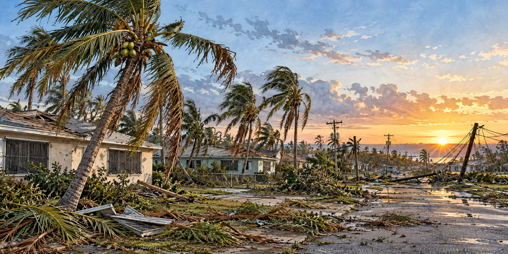

Hurricane Wilma (2005)
The Strongest Atlantic Hurricane Ever Measured, and the Last of Its Kind for a Decade

Wilma crossed the entire Florida peninsula in barely four hours.
Hurricane Wilma crossed Florida in about four hours, knocked out electricity for millions of people and battered communities from the Ten Thousand Islands to the Atlantic coast. Its speed limited rainfall in many areas, but its powerful winds and coastal flooding left a lasting mark.
The Fastest Deepening Ever Recorded
Wilma formed near Jamaica on October 15, 2005, in the same record-setting season as Hurricane Katrina. Its central pressure fell by 97 millibars in 24 hours, ultimately reaching 882 millibars that is the fastest deepening recorded in the Atlantic basin, reaching Category 5 with 185-mile-per-hour winds. At its most intense its eye shrank to 2.3 miles across, an exceptionally small eye. An eyewall replacement cycle then eased it slightly below Category 5 as it turned toward the Yucatán.
Two Days Trapped Over Cancún
Wilma struck Cozumel as a Category 4 with 150-mile-per-hour winds, then crossed onto the mainland near Puerto Morelos about six hours later and stalled, sitting over the Cancún resort area for nearly two days. More than 700,000 dwellings were damaged and 300,000 people left homeless across Mexico. Water in Cancún rose sixteen to twenty-six feet, reaching the third story of some buildings. Florida forecasters hoped an approaching cold front would weaken the storm. It did not.
Four Hours to Cross a State
The cold front instead steered Wilma east. Racing across the Gulf of Mexico, it regained strength and made landfall near Cape Romano, between Marco Island and Everglades City, at 6:30 a.m. on October 24 as a Category 3 with winds of 120 miles per hour. It crossed Big Cypress National Preserve and passed south of Lake Okeechobee at roughly twenty-five miles per hour, exiting above Palm Beach as a Category 2 with winds near 105. The speed held rainfall to three to seven inches, but not the wind damage.
A Surge That Floated Boats Down Main Street
Surge reached roughly ten feet in the Ten Thousand Islands, flooding Everglades City and Chokoloskee, and submerged about a third of Key West, where residents rowed small boats down the main streets and floodwater stood five feet deep inside some homes. It was the worst coastal flooding in the Keys since Hurricane Betsy four decades earlier. Mobile homes across Collier County took heavy damage; two Florida deaths occurred in the county. Local historians note it would have been far worse had landfall shifted five to ten miles north.
Six Million People in the Dark
For most Floridians the lasting effect was the power failure. More than 3.2 million Florida Power & Light customers lost electricity, the largest outage in the company’s history at the time, affecting an estimated six million people. Restoration took nearly two weeks in the hardest-hit areas, some residents went more than twenty days, and cable, internet and cell service stayed down in places for up to two months. Broward and Palm Beach schools closed for two weeks, even though the storm had weakened to Category 1 or 2 there.
The Lighthouse That Fell Early
The 153-year-old Cape St. George Light on St. George Island in the Panhandle collapsed into the Gulf on October 21, 2005, three days before Wilma’s Florida landfall and well outside its wind field. The tower had been weakened by Hurricanes Opal (1995) and Georges (1998) and by beach erosion that exposed its 2002 foundation repair.
A Decade of Quiet
Wilma’s Florida damage is estimated at $20.6 to $26.6 billion, on top of an insurance market strained by the 2004 season. Citrus growers lost roughly $1.82 billion, and citrus canker spread through weakened groves. No Category 3 or stronger hurricane struck Southeast Florida for more than a decade afterward, leaving many newer residents with no firsthand experience of a major storm.
Quick Facts
| Formed | October 15, 2005, near Jamaica |
|---|---|
| Peak | Category 5, 185 mph, 882 millibars, lowest Atlantic pressure on record |
| Eye at peak | 2.3 miles across |
| Florida landfall | Near Cape Romano, October 24, 2005; Category 3, 120 mph |
| Crossing time | Just over four hours at about 25 mph |
| Storm surge | Up to 10 feet, Ten Thousand Islands; about a third of Key West flooded |
| Power outages | 3.2 million+ FPL customers; about 6 million people |
| Damage | $20.6–$26.6 billion in Florida |
Did You Know?
Wilma’s eye shrank to just 2.3 miles across, an exceptionally small eye.
The Cape St. George Light fell three days before Wilma reached Florida.
Vocabulary
Millibar: a unit of air pressure; lower readings mean a more intense storm.
Eyewall replacement cycle: a reorganization of a hurricane’s inner core that can temporarily weaken it.
Citrus canker: a bacterial disease of citrus trees that spreads easily in storms.
Discussion Questions
1. Why does a storm’s category tell only part of the story of what it will do?
2. How might a decade without a major hurricane change a region’s memory and preparedness?
Related Articles
FLH-0008 — Hurricane Charley (2004)
FLH-0009 — Frances and Jeanne (2004)
FLH-0011 — Hurricane Irma (2017)
Sources
Wikipedia. “Hurricane Wilma,” “Effects of Hurricane Wilma in Florida,” and “Cape St. George Light.”
NOAA AOML. “10th Anniversary of Hurricane Wilma.” aoml.noaa.gov
National Weather Service, Miami. “Hurricane Wilma.” weather.gov/mfl
NOAA Weather Prediction Center. “Hurricane Wilma, October 22–24, 2005.” wpc.ncep.noaa.gov
Coastal Breeze News. “Hurricane Wilma 2005.” coastalbreezenews.com
WeatherBug. “On This Day in 2005: Record-Breaking Hurricane Wilma Formed.”
St. George Lighthouse Association. “History of the Cape St. George Light.” stgeorgelight.org
Lighthousefriends.com. “Cape St. George Lighthouse, Florida.”